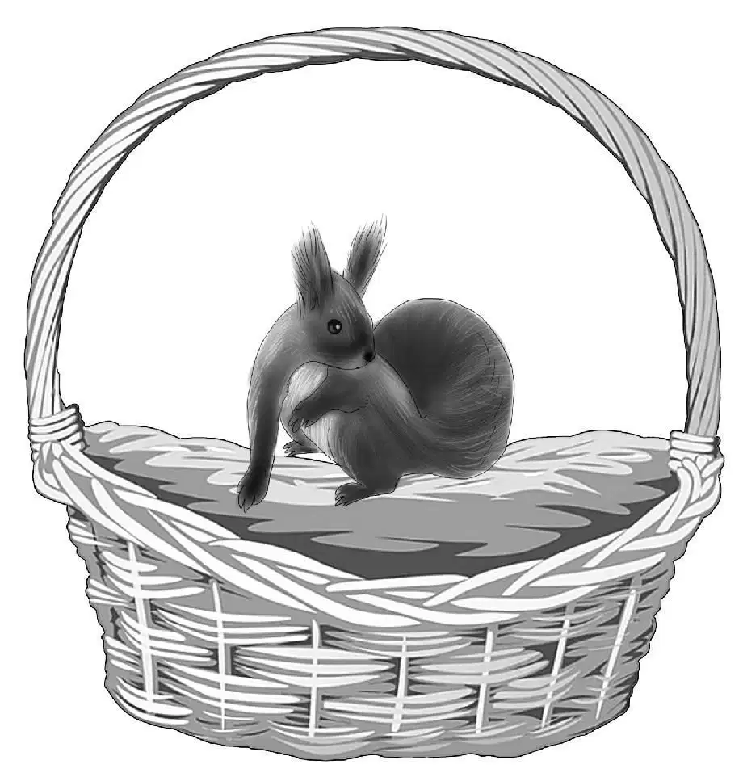
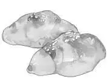
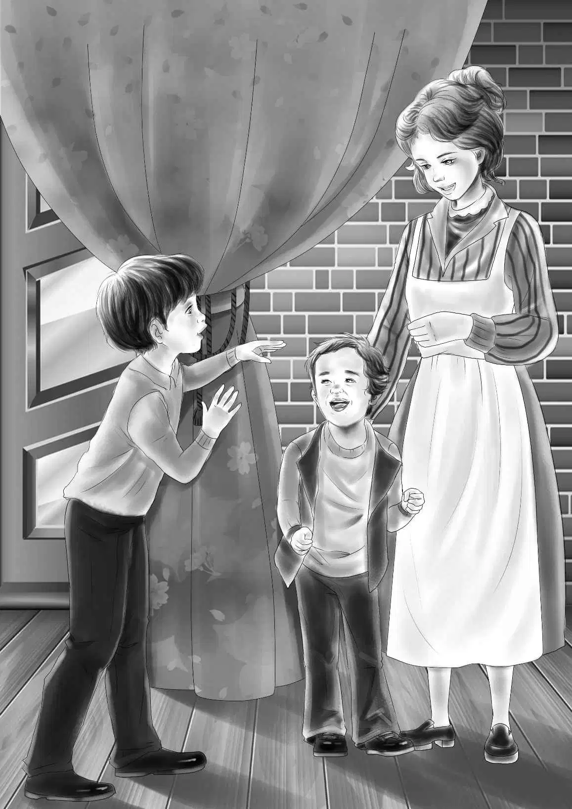
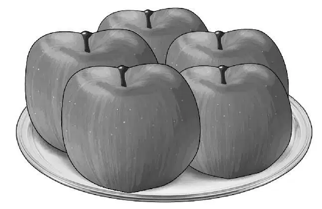

Noises in the Night

终于，孩子们看到了那家商店，商店的对面是几栋小房子。
杰西沿小路的方向望了一下，总结道：“这里像是一个村子呢。”
班尼看了看商店的招牌，只见上面写着：
尼尔森商店
“我猜，尼尔森一家肯定住在商店的二楼。”班尼说道。
“我也是这样想的，你也注意到那些白色的窗帘了吧？”杰西赞同道。
“估计来这儿买东西的都是附近的居民，他们不想开车去绿野镇购物。”亨利说。
奥登家的孩子们走进了商店，推门时，门铃响了一声——其实，店主不用听也知道来客人了，因为他就坐在柜台的后面。
孩子们也不知道究竟会在商店里发现什么秘密，不过尼尔森一家显然与大家料想的有些不一样。
首先，尼尔森先生很年轻。在亨利看来，尼尔森先生还像个大学生，人长得很帅气，有着棕色的头发，褐色的眼睛，身材属于那种瘦高却结实的类型，而最迷人的，莫过于他的笑容。
“太好啦，总算有客人了。”他对孩子们说道，“我是托马斯·尼尔森。夏天一过，这里就冷清起来，没什么顾客光临。”
“我们姓奥登。”亨利说。
“哦，对的，我知道你们会来，我见过你们的爷爷呢。”年轻人说，“他可是位很有涵养的先生。”
“对极了，他的确很有涵养。”班尼说道，“我叫班尼，这是望望，狗狗可以进店么？”
“那要看狗狗愿不愿意。”尼尔森先生笑道，“你们的狗狗好像很有礼貌呢。”
望望乖乖地蹲在门口——这都是杰西训练出来的，屋子里弥漫着烤面包的香味，它时不时抽动鼻子嗅一嗅。
“我们住在猎人的小木屋里。”杰西说道。
“很不错呢。”店主说道，“有什么需要帮忙的地方，尽管开口。”
就在这时，一位漂亮的年轻女人领着一个五岁左右的小男孩从门帘后走了出来。
“是帕奇！”班尼叫了起来。
“你怎么知道我的名字？”帕奇一边径直朝班尼走了过去，一边问道，“可我并不认识你啊！”
“我们是在小屋的访客手册上看到的。”杰西解释道。奇怪的是，她发现尼尔森夫人竟然朝丈夫看了一眼，脸红了起来。
“是啊，”年轻人说，“我们偶尔会过去住住，换换环境，那里很清静。”
“如果想换环境的话，应该去镇上才对啊。”班尼说，“林中小屋不是比这商店里还冷清么？”
年轻人似乎不知道该如何回答，他缓缓地站起身，转身拿了一罐泡菜下来，又放了上去。
“那种泡菜我们也想买点。”杰西说，“我们都喜欢吃甜泡菜，可是却没带来。”
帕奇伸出手，拉了拉班尼，说：“我们在小木屋里翻了又翻，是想……”
“帕奇，过来，我给你整一整衬衫。”妈妈打断了儿子的话。
杰西装作什么也没有发生一样，说道：“我们的金枪鱼罐头吃完了，想再买一罐。”接着，读起了手里的购物单。
“芭芭拉，”尼尔森先生说道，“麻烦你去拿一罐金枪鱼罐头给奥登小姐，就在你那边。”

显然，芭芭拉这会儿乐得有事可做，她转过身，对孩子们说：“你们在店里转转，看看还需要些什么。”
“我知道你们需要什么。”帕奇说，“你们一定得买些小面包才行。”
“可不是么！”尼尔森先生说，“帕奇说得很对，这里的面包很好吃，非常不错。不过……”
“不过什么？”班尼问道。
“哦，没什么……只是我还可以做得更好些，我爸爸和爷爷都是面包师，他们做的面包那可是世界第一啊。”
“您也喜欢烹饪，对吧？”杰西问道。她留意到尼尔森先生谈起这个话题时，脸上的笑容是如何灿烂，而她自己也很喜欢烹饪。
“是啊，托马斯喜欢着呢！”尼尔森先生的思绪似乎飘到了远方，于是尼尔森太太代为回答了杰西，“他天生就适合做面包师！在烤面包、烙馅饼、做曲奇饼和蛋糕的时候，他是最开心的，他爱极了烘焙。”
“我也喜欢。”帕奇说。
男孩的妈妈笑了起来：“的确如此，帕奇不用别人帮忙，就能独立做出美味的小面包来。”
帕奇拉起班尼的手，说：“班尼，看得出你人很好，我喜欢你。你一定要买一些我妈妈做的炖牛肉，裹着面包吃，可好吃啦！”
“是配着面包吃，帕奇。”男孩的妈妈更正道。
“差不多，差不多啦！”帕奇说，“爸爸做的面包里面加了葡萄干，妈妈的炖牛肉里放了洋葱。”
“那就两个都尝一尝。”亨利说，“来点炖牛肉，再来些面包。杰西是厨师长，由她决定好了。”
“没错，炖牛肉和面包，都要买。”杰西赞同道。
“我敢说，你们一定会喜欢炖牛肉的。”尼尔森太太说道，“我用玻璃坛子给你们装起来，你们大概需要一夸脱（夸脱，是英美等国常用的计量单位，在美国，一夸脱等于0.946升） 。”
可是等看到香喷喷的洋葱和胡萝卜丁时，班尼不禁说道：“我看得买两坛才够，杰西。”
“嗯，还真是呢，咱们奥登家的胃口都很好。我们今晚就在壁炉里生些火，再把炖牛肉放在煤油炉上热一热。”
“小木屋里还有很多剩余的柴火吧？”尼尔森先生问道，“上次我们去的时候，留了一大堆呢！”
“是有很多，真是太感谢了。”亨利说道，“今后等我们离开前，也要留些木柴在小房子里。”
“小木屋很温馨舒服，我们都很喜欢。”芭芭拉说，“对了，要不要拿个袋子，把坛子装起来？”
“不了，我们有背包呢。”维莉说，“哦，这儿还有葵花子，请给我们来上一包。噢，杰西，看，那些苹果又大又红！”
“苹果适合做甜点，又不用煮得麻烦。”杰西说，“给咱们拿12个吧！”
“东西太多了吧？”尼尔森太太说道。
“反正我们有四个人呢。”亨利说。
“班尼，你就别走了，好不好？”帕奇央求道。
“不好意思，我不得不走啊！”班尼说，“因为我们要赶回去给小鸟做食盆。”
尼尔森太太抚摸着小男孩的头，说道：“别难为他们了，他们要走好长一段路才能回到小屋去呢。对了，我把面包装在这个小篮子里了，方便你们拎。篮子就不用还回来了，反正我们还有好几只。要注意，小面包很软，容易被压扁。”

“您想得真周到，尼尔森太太。”杰西说，“我们很快会再来的。”
孩子们离开小店，等走到无人看见的地方，班尼才冷不丁开口说道：“咱们应该停下来谈一谈啦！我一直在想，当时帕奇说‘我们翻了又翻’时，尼尔森太太为什么会突然打断他。”
亨利点了点头，说：“说得对，班尼，我敢肯定，这里的确有些古怪。”
“我也这么觉得。”杰西说，“真是奇怪得很，尽管尼尔森一家都很友好，但他们一定有什么事瞒着咱们。”
“我也这样想。”维莉说。
“既然大家都同意这事有古怪，那就赶紧回木屋去吧！”班尼说，“咱们有的是时间讨论，可现在还有半英里路要走呢。”
孩子们回到小木屋时，天色已经很晚了。
“感觉回家的路比离开时长一些啊！”班尼说道。
“这里的确有家的感觉。”维莉说着，走进屋去。
“咱们每到一个新的地方，都会找到家的感觉，不是么？”杰西说，“想想看，咱们住过多少地方，有哪次不开心的？”
“那是因为咱们都在一起嘛！”班尼紧接着催促道，“快开饭吧！”
“好吧，班尼，听你的！”杰西说，“不过咱们的餐具不够，我还得找一个装鸟食的容器呢。”
“还用找吗？”班尼说，“就把那个小提篮挂在树上就可以啦！”
“还真是！”杰西在篮子里装满了葵花子。
小木屋没有后门，亨利和班尼绕到屋后，把篮子挂在一根低矮的树枝上，以便大家透过窗子就看得到。
杰西和维莉则清点着手头的厨具。“这儿有个锡制的炖锅，可以用来盛放炖牛肉。”杰西说道，“除了这个，就只有一个炒锅，再没有别的了。”
维莉则找出了一只蓝色的碗，一个白色的大杯子，一个菜盘，还有一个汤盘。
“好样的，维莉。”杰西笑着说，“太有意思了，大家的餐具各不相同。把这个大点的蔬菜盘给班尼吧，我就用杯子好了——不过要吃饱估计得两杯才够。”
亨利坐在椅子上，将红苹果擦得亮光光的。“晚饭得抓紧吃啦，”他说，“天越来越黑了。”
“咱们还有烛台呢，亨利。”班尼说。
“等吃完饭，咱们就在壁炉里生些火，边烤火边聊天，这样整晚都不会觉得冷。”亨利说。
孩子们在桌旁坐了下来，杰西将不同的餐具发给每个人，桌子中间则摆放着12个小面包。
炖牛肉果然美味可口极了，孩子们边吃边聊着天。
“看，小鸟的食篮上是什么？”班尼叫了起来，“原来是一只灰色的大松鼠！”
“哦，天哪！”杰西叫道，“我听人说，松鼠是会把鸟儿吓跑的。”

“我还听人说过，要是让松鼠进了屋子，那才叫糟糕。”维莉说，“咱们要仔细地把门关好才行。”
亨利敲了敲窗子，可那只松鼠只是抬头朝他瞟了一眼，依然稳稳地坐着。
“它倒是聪明得很哪！”班尼说，“看它蹲在那儿一动不动的样子，像不像冰雕？”
晚饭除了苹果之外，很快被吃光了。亨利开始在壁炉里生起火来，他用松塔和几根小树枝垫底，接着在上面架起两根粗大的木柴。火苗闪了几下，很快便熊熊地燃烧起来。
“现在，咱们可以尽情来聊聊尼尔森一家了。”亨利说，“我认为，他们之所以经常来这儿，是为了寻找什么。”
“我也是这样想的。”班尼说，“帕奇当时想说的就是这个，只不过他用‘翻’来代替了‘找’，对于我来说，这两个字都是一样的意思。”
“还有，他妈妈急着打断他的话更引起了我的注意。”杰西补充道。
孩子们一边谈，一边吃着红苹果。不知不觉间，天色已经很晚了，于是，亨利在壁炉前罩了一个炉挡，孩子们则各自爬上床铺，钻进睡袋里。
“被子里是不是又暖和又舒服，亨利？”班尼问道，“我已经困了。”
亨利没有答话，因为他已经进入了梦乡。
孩子们睡得很熟，可几个小时后，他们又一个接一个地醒了过来，因为屋顶上传来了一阵怪异的刮擦声。望望叫了起来，随即棚顶上响起了跑动的脚步声，望望四处窜着，叫得更响了。
“呀，是什么？”班尼惊问道。
“杰西，维莉！你们两个还好吧？别怕！”亨利叫道。
“是怎么回事？”杰西问道。
“不知道。”亨利说，“但我会弄清楚的。”